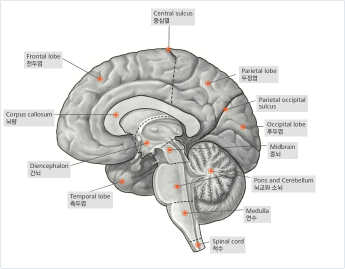
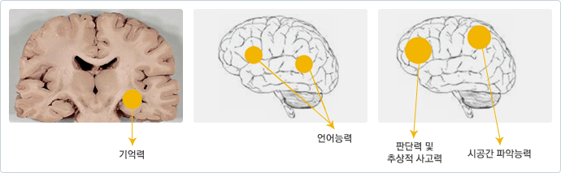

뇌는 우리의 생각, 판단, 운동, 감각 등을 담당하는 매우 중요한 기관입니다.
무게는 약 1,300그램 정도 되며, 약 천억개 정도의 신경세포가 밀집되어 있는 신경 덩어리입니다.
대뇌 피질과 백질
뇌는 신경세포와 신경 교세포라고 하는 두 종류의 세포들이 모여 있는 덩어리입니다. 이 중에서 신경세포가 주로 신체활동과 정신활동을 담당하는데, 그 신경세포의 몸체는 주로 뇌의 겉 껍질 부분에 모여 있습니다. 그래서 이 부분을 피질(皮質, cortex) 이라고 부르고 약간 회색 기운을 띄고 있어서 회백질(grey matter) 이라고도 부릅니다. 반면, 신경세포의 몸체에서 뻗어 나온 가지들은 신경 섬유의 다발을 이루어 뇌의 내부로 향해 있는데, 그 색깔이 희며 반짝 반짝 윤기를 띄고 있어서 백질 (白質, white matter) 이라고 불립니다.
대뇌 피질
전두엽 피질
전두엽은 머리 앞 부분, 즉 이마 부위를 중심으로 한 대뇌의 껍질 부분을 말합니다. 이 부분의 신경세포들이 주로 하는 일은 일을 계획하고, 적절하게 실행하고, 또 너무 지나치지 않도록 적당한 제동을 거는 일을 담당합니다. 말하자면 자동차 엔진, 운전대, 브레이크에 해당합니다. 엔진에 해당하는 것은 의욕, 동기, 활력에 해당하며, 운전대에 해당하는 것은 일의 순서와 방법, 판단력과 융통성에 해당하며, 브레이크는 자제력, 충동 조절 등의 역할을 담당합니다.
두정엽 피질
두정엽은 머리(頭)의 정수리 부분 (頂)이라는 의미로 이름이 붙었습니다. 특히 오른쪽 두정엽은 공간을 파악하는 능력을 가지고 있습니다. 처음 가본 곳에서 방향을 파악하거나, 시계 바늘의 위치를 보고 지금 몇 시 정도 되었는지를 파악하는 능력, 조끼의 어느 구멍으로 팔을 집어 넣어야 옷을 제대로 입을 수 있는지 아는 능력 등이 모두 이 두정엽 기능의 공간 파악 기능 때문에 가능한 겁니다. 알쯔하이머병에서는 이 두정엽 기능이 비교적 초기부터 저하되는 것으로 알려져 있습니다.
측두엽 피질
측두엽은 뇌의 양 측면의 피질을 말합니다. 즉, 양쪽 귀의 윗쪽인 이른바 '관자놀이'라고 부르는 부위에 해당하는 영역입니다. 특히 이 부분은 치매의 이해에 중요한데, 왜냐면 알쯔하이머병과 같은 질병에서는 이 측두엽 부위의 신경세포가 자꾸 죽어서 없어져가는 것이 주요 현상이기 때문입니다. 이 측두엽이 기억력, 학습 능력, 언어 능력 등을 담당하므로 치매에서는 기억력이 떨어지고 언어 표현과 이해 능력이 점차 떨어져가게 되는 원인이 됩니다.
후두엽 피질
대뇌의 뒷부분, 즉 뒤통수 부분에 해당하는 피질 부위가 후두엽 피질입니다. 이 부분은 주로 시각적인 내용을 파악하는 기능을 가지고 있습니다. 우리가 사물을 보면서 주변의 물건들을 파악하는 것은 이 후두엽 피질의 기능이 온전하기 때문입니다. 뇌혈관 장애, 뇌종양 등으로 후두엽 피질이 손상되면, 안구 (눈)은 멀쩡하게 정상적이라 하더라도 자기가 본 것이 무엇인지를 잘 파악하지 못할 수가 있습니다. '보는 기구'와 '해석하는 기구'가 다르기 때문이지요.

변연계와 해마
모서리나 가장자리를 의미하는 변연계(limbic system)은 대뇌 피질과 시상하부 사이에 위치하는 일련의 구조물들을 가리키며
주로 감정, 행동, 욕망 등의 조절에 기여하며 특히 기억에 중요한 역할을 합니다. 이중 해마는 알쯔하이머병에 의해 점진적으로 위축이 진행되는 것으로 알려져 있으며 이로 인해 환자는 질병 초기에 최근 기억의 장애가 발생한다고 알려져 있습니다.
* 본문에 관한 자세한 내용을 보시려면 자료 다운을 클릭해 주세요.
제목 : 치매와 관련된 뇌의 구조와 기능 / 저자 : 서울아산병원 정신과 김성윤교수

주요 인지 기능
인간의 주요 인지 기능은 크게 다섯 가지로 나눌 수 있습니다. 주의력, 기억력, 언어능력, 시공간 구성능력, 실행기능입니다. 이들이 하는 기능과 관련된 뇌 영역을 살펴보겠습니다
주의력
일상생활에서 주의력 혹은 집중력이라는 단어로 많이 쓰이고 있는데, 주의력을 정의하는 것은 생각만큼 쉽지 않습니다. 이는 단일한 개념이라기보다는 다양한 심리적 현상을 뜻하는 명칭이기 때문입니다. 뇌에서 한 순간에 처리할 수 있는 정보의 양에는 한계가 있기 때문에 특정 정보를 선택하는 과정이 필요한데, 이 과정을 ‘주의’라고 말할 수 있습니다.
이러한 주의력은 주의를 유지할 수 있는 지속적 주의력, 무관한 자극을 무시하고 특정 자극에만 주의를 집중하는 선택적
주의력, 그리고 두 가지 이상의 여러 자극에 적절히 주의를 배분하는 능력으로 나누어 볼 수 있습니다.
이와 관련된 뇌 부위로는 전두엽의 앞부분(전전두엽)과 두정엽, 망상체, 중뇌의 상구, 시상 그리고 변연피질 등이 있고, 이러한 뇌 부위에 손상이 오면 주의력에 장애가 생기게 됩니다.
기억력
기억이라는 것은 우리가 생각하는 것보다 훨씬 더 복잡한 체계로 구성되어 있습니다. 그 작용 시간에 따라 크게 감각기억, 단기기억, 장기기억으로 나뉘고, 장기기억은 또 외현기억과 암묵기억으로 나뉩니다. 외현기억은 사실이나 사건에 대한 기억으로, 기억 정보에 대한 의식적 경험이 가능하며, 의미기억과 일화기억이 있습니다. 암묵기억은 행위나 기술 및 조작에 대한 기억으로, 기억정보에 대한 의식적 접근이 불가능하며, 특정 기술, 점화, 습관, 비연합 학습 등이 있습니다. 이와 관련된 뇌 부위는 측두엽인데, 특히 내측 측두엽의 해마에서 담당한다고 알려져 있습니다. 전체 치매의 50-70%를 차지 알쯔하이머 치매의 경우 주요 병변 부위가 바로 이곳 해마입니다.
최근 연구에서는 기억을 저장하고 인출하는 데 있어 전전두엽이 중요하고 능동적인 역할을 한다는 보고가 나오고 있습니다. 따라서 측두엽 뿐 아니라 전두엽에 손상이 와도 기억력 장애가 생길 수 있습니다.
언어능력
언어능력은 자발적인 언어표현능력, 따라 말하기능력, 이름대기능력, 언어 이해력, 쓰기 및 읽기능력, 그리고 사회언어적 능력 등으로 나눌 수 있습니다. 언어 생성은 주로 좌반구의 하전두엽 부분에 있는 브로카 영역을 포함하는 부위에서 관여하고, 언어 이해는 주로 좌반구의 상측두엽 부분에 있는 베르니케 영역의 주변 부위에서 관여합니다.
사회언어적 능력이란 암묵적인 대화 규칙을 지키고, 언어의 운율, 리듬, 얼굴표정 등을 상황에 맞게 이해하고 사용할 수 있는 능력을 말합니다. 대부분의 언어능력은 주로 좌반구에서 담당하지만, 이 사회언어적 능력만은 우반구의 외측구 주변에서 관여한다고 알려져 있습니다.
시공간 구성능력
시각적 대상의 공간적 위치와 형태를 파악하는 지각능력과 시공간적 구성 및 조직화를 할 수 있는 능력을 말합니다. 길을 찾아 가거나 그림을 그리거나 혹은 퍼즐을 맞출 때 쓰이는 능력으로, 언어능력과는 반대로 우반구(특히 두정엽)에서 주로 담당한다고 알려져 있습니다. 우반구는 자극의 전체적인 윤곽을 구성하는 데 관여하고, 좌반구는 자극의 세부적인 내용을 구성하는 데 관여합니다.
실행 기능
인지 기능 중 가장 복잡한 고위 기능이 실행기능입니다. 여기에는 판단능력, 문제해결 능력, 추론 및 추상화 능력, 계획력, 목적에 맞게 순서대로 일을 처리하는 능력, 융통성, 자동화된 반응을 억제하고 상황에 적절한 반응을 하는 능력, 통찰력, 충동조절능력 등이 포함됩니다. 실행 기능은 주로 전두엽, 특히 전전두엽 영역에서 담당한다고 알려져 있습니다.
